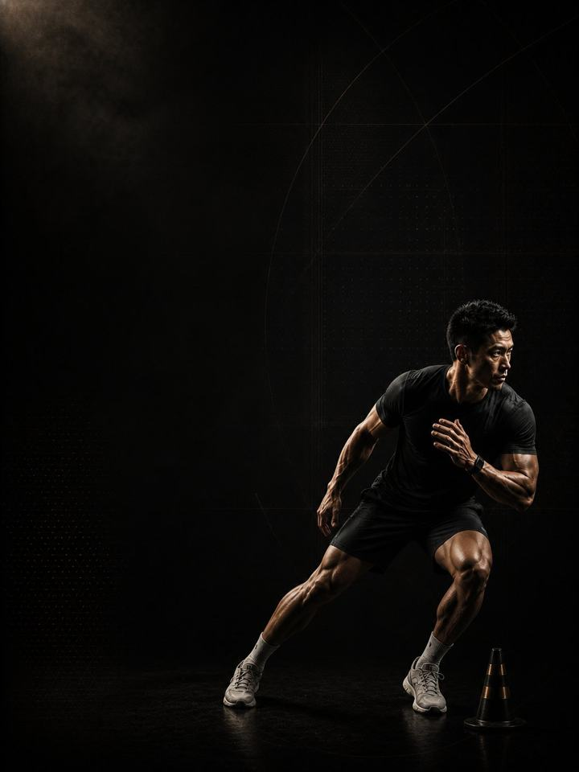

Multidirectional · Restore
Repair what the season cost, then rebuild the base for next year.
- Built forfootball, basketball and handball players after the season
- Training days3 gym days a week in the off-season, or a 2-day short version
- Session length48–60 minutes
- Equipmentfull gym, plus a med ball, sled and cones if available
- Formatmobile PDF, every exercise linked to a demo video
The store opens soon. For now, Buy opens an Instagram message and you receive the PDF there.
Who it's for
Football, basketball and handball players whose season has just ended. The off-season is not a holiday, and it is not a fresh pre-season either. It is the only window to fix what built up while there was no time to stop: the niggle you played through, the side that never matched the other, the calf that has been tight for months.
This block starts deliberately easy, with four weeks of no sprinting, no cutting and no jumping, while tissue that has been loaded for nine months gets a chance to remodel. Then it rebuilds: volume first, load second, speed last. When Block 1 comes round again, you start it healthy and ahead instead of repairing.
Where it sits in the year: Block 4 of 4 in the Multidirectional family. Base, Build, Compete, Restore, then back to Base. Run it the moment your season ends. It leads straight into Block 1 next year.
Your week
Take the first week off entirely. Before week 1, take five to seven days with no structured training at all. Walk, swim, sleep. This is prescribed, not permission.
| Sun | Mon | Tue | Wed | Thu | Fri | Sat | |
|---|---|---|---|---|---|---|---|
| Off-season, 3 days | Day 1 | Rest | Day 2 | Rest | Day 3 | Rest | Rest |
| Short version, 2 days | Day 1 | Rest | Rest | Day 2 | Rest | Rest | Rest |
Three non-consecutive days is the standard version. Sessions are longer than in season but far less intense.
Every session runs the same way:
- Warm-up, 8–10 min. The same sequence every session. Glutes, hips and shoulders switched on.
- Speed and power, 12–15 min. Nothing in weeks 1–4. Low-level hops come back in the warm-up from week 5, and sprinting and jumping return in weeks 9–12. Full recovery between sets, and the set stops the moment quality drops.
- Strength, 20–25 min. The compound lifts, with two to three minutes between sets.
- Tissue work, 8–10 min. Nordics, Copenhagens, calves and carries. Last, and never cut.
How the 12 weeks progress
Tissue adapts on a longer clock than fitness does. Tendon and connective tissue that has been loaded hard for nine months needs a period of lower intensity, not lower activity, to remodel. That period does not exist inside a season. This block uses it on purpose: unload first, rebuild general capacity second, and bring back sprinting and cutting only once there is something underneath them.
| Weeks 1–4 | Weeks 5–8 | Weeks 9–12 | |
|---|---|---|---|
| Phase | Tissue repair | Hypertrophy | Impact tolerance |
| Goal | Let joints and tendons recover from the season's load | Rebuild the muscle lost during the season | Restore tolerance to impact and sprinting |
| Looks like | Machines, controlled ranges, no impact | Free weights return and volume climbs, with low-level hops back in the warm-up. The muscle-building phase of the year. | Impact and speed return properly |
| Working sets a week | 48 | 58 | 64 |
| Average effort | RPE 6.1, about 4 reps in reserve | RPE 7.1, about 3 in reserve | RPE 7.7, about 2.3 in reserve |
| Landings a week | 0 | 60 | 100 |
| Throws a week | 0 | 0 | 20 |
The block at a glance
Working sets per week, by what they train. The dashed line is effort.
Where this block sits in the training year
Run the four blocks in order and they make a full training year.
RPE is effort rated from 1 to 10. RPE 7 means about 3 reps left in the tank. Working sets exclude the warm-up.
Deload weeks: weeks 6 and 12 are lighter. Week 12 also sets you up to start Block 1 fresh instead of tired.
The rules that make it work
- Take the week off first. Five to seven days of nothing structured before week 1. It is the cheapest and most effective part of the block, and the one most often skipped.
- Weeks 1–4 are supposed to feel too easy. No sprinting, no cutting, no jumping. Tendon remodels on a slower clock than muscle, and this is the only window it gets.
- Volume before load, load before speed. Reversing that order is how off-seasons produce injuries.
- Fix one thing properly. Pick the area that troubled you all season and run the matching AXIS corrective program alongside weeks 1–8. The block leaves room for exactly that. You will not get this chance again for a year.
- Finish rested, not wrecked. Week 12 should leave you ready to start Block 1 strong. An off-season that ends in exhaustion has defeated its purpose.
- A jump number is the cheapest fatigue test there is. From week 5, three standing broad jumps at the start of every Day 1, keeping the best. More than 10% below your own rolling average means reduce that day: drop the power work and one set from each lift.
- Count landings. None in weeks 1–4; the warm-up uses calf raises instead. From week 5, keep the week under about 100 landings, warm-up hops included. Sport practice counts on top.
Terms
- Block: 12 weeks. This program. One block develops one set of qualities to a set standard.
- Phase (mesocycle): 4 weeks. Each one targets one quality. Four weeks is a choice, not a rule. The length follows the goal.
- Training week (microcycle): where effort climbs, sets are added and the deload lands.
- Training year (macrocycle): four blocks in order (Base, Build, Compete, Restore), about 48 weeks.
How you'll measure progress
You retest in the deload weeks, 6 and 12. The weekly broad jump starts in week 5, once jumping returns.
What good progress looks like
- Weeks 1–4: the season's aches quieten down and sleep improves. The training feels easy, and it is supposed to.
- Weeks 5–8: general strength and muscle come back quickly, and the left and right gaps start closing.
- Weeks 9–12: sprinting and jumping return and feel better than they did mid-season.
Block done when: you are repaired, rebuilt, symmetrical and rested. The goal is to arrive at Block 1 healthy, not in the best shape of your life. That is what next year's blocks are for.
Respect the week
Count everything: sport, gym and sleep. Sudden jumps in weekly workload are the most reliable predictor of injury in amateur sport. Protect 7–9 hours of sleep. It is the most powerful performance tool available, and the cheapest.
The science
Every program in the library is built on published research, and how strong that research is gets stated, not implied. Where the evidence is limited, the page says so.
| Finding | Source | What it does not show |
|---|---|---|
| Strength training cuts sports injuries to under a third of the control rate. Stretching does not reduce them. | Lauersen, Bertelsen & Andersen, British Journal of Sports Medicine 2014. Meta-analysis of 25 RCTs, 26,610 participants. PMID 24100287 | Risk ratio 0.32 for strength training and 0.96 for stretching. The trials varied a lot, and dose was not standardised. |
| Programs that include the Nordic hamstring exercise roughly halve hamstring injuries. | van Dyk, Behan & Whiteley, British Journal of Sports Medicine 2019. Meta-analysis, 15 studies, 8,459 athletes. PMID 30808663 | Risk ratio 0.49, or 0.55 with the high-risk-of-bias studies removed. It measures programs that include the exercise, not the exercise alone. |
| One adductor exercise, three times a week in pre-season and once a week in season, cut reported groin problems by 41%. | Harøy et al., British Journal of Sports Medicine 2019. Cluster-randomised trial, 35 teams, 652 male footballers. PMID 29891614 | Odds ratio 0.59. Self-reported, semi-professional men's football only. Not yet repeated in women or other sports. |
| Every sensible prescription beats not training. Heavier loads rank highest for strength. Multiple sets rank highest for muscle size. | Currier, McLeod, Banfield et al., British Journal of Sports Medicine 2023. Network meta-analysis, 178 strength and 119 hypertrophy studies. PMID 37414459 | The differences between prescriptions were small, and all of them worked. |
What's next
After 12 weeks:
- Next year, Block 1: Multidirectional · Base
- One area needs work: the Corrective series
Before you buy: get cleared first if
- You have chest pain, unusual breathlessness, palpitations or dizziness with exertion.
- You have uncontrolled high blood pressure, a known heart condition, or recent surgery.
- You are pregnant or recently post-partum. Get clearance and a tailored program first.
- You have sharp joint pain in one spot that won't settle. Start with the matching AXIS corrective program.
This program is general fitness guidance. It does not replace a medical assessment.
The store opens soon. For now, Buy opens an Instagram message and you receive the PDF there.